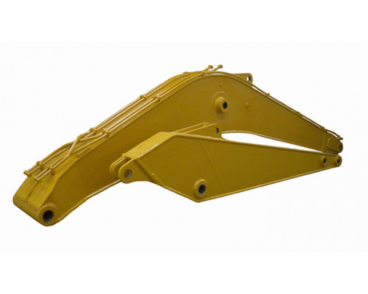
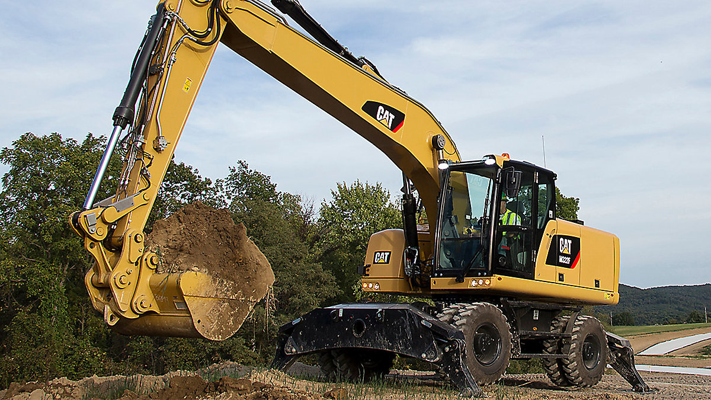
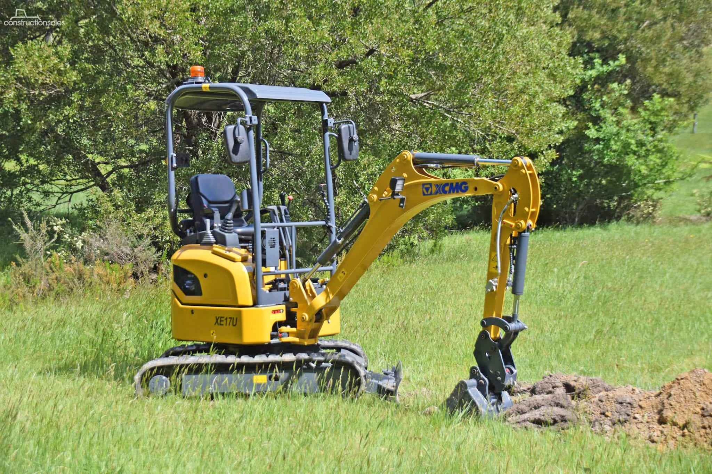
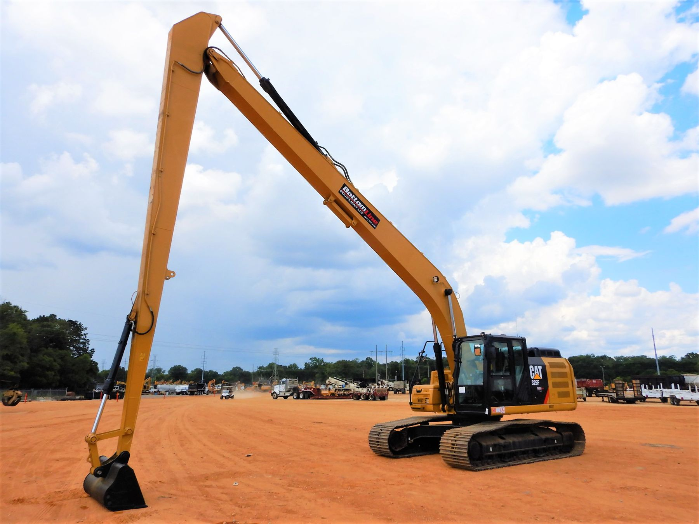
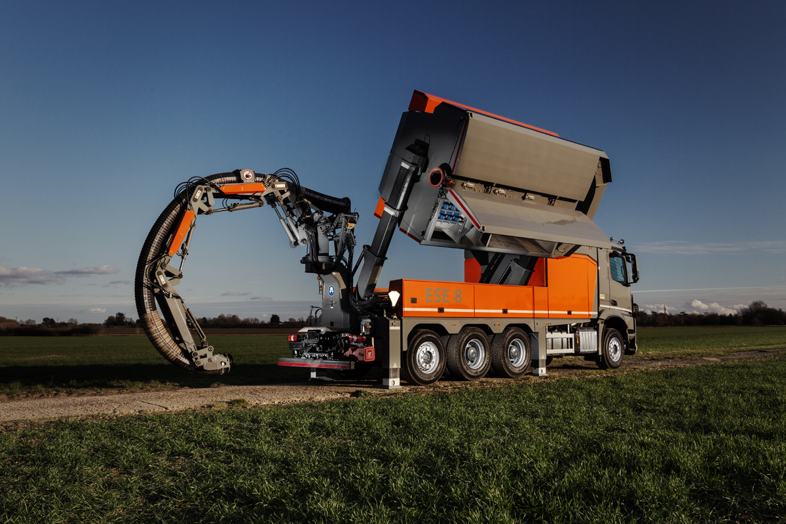
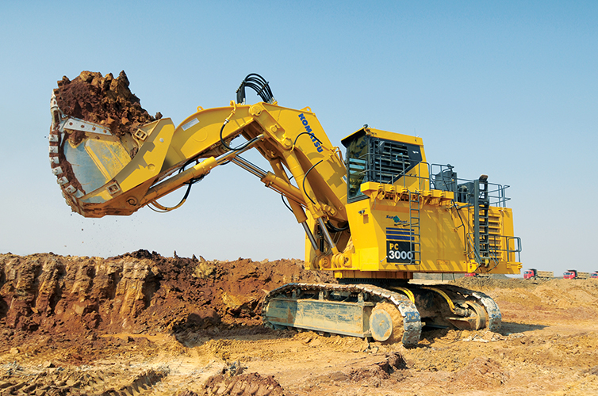
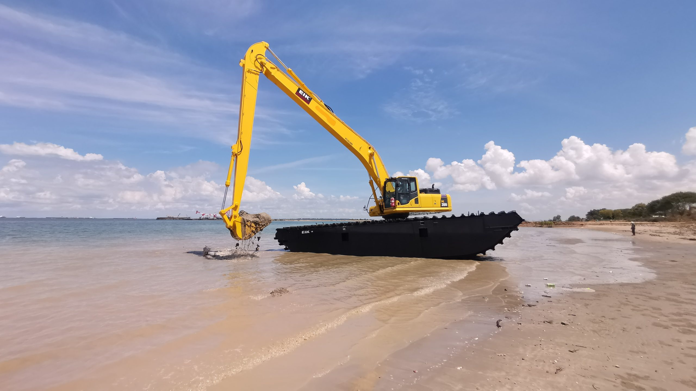
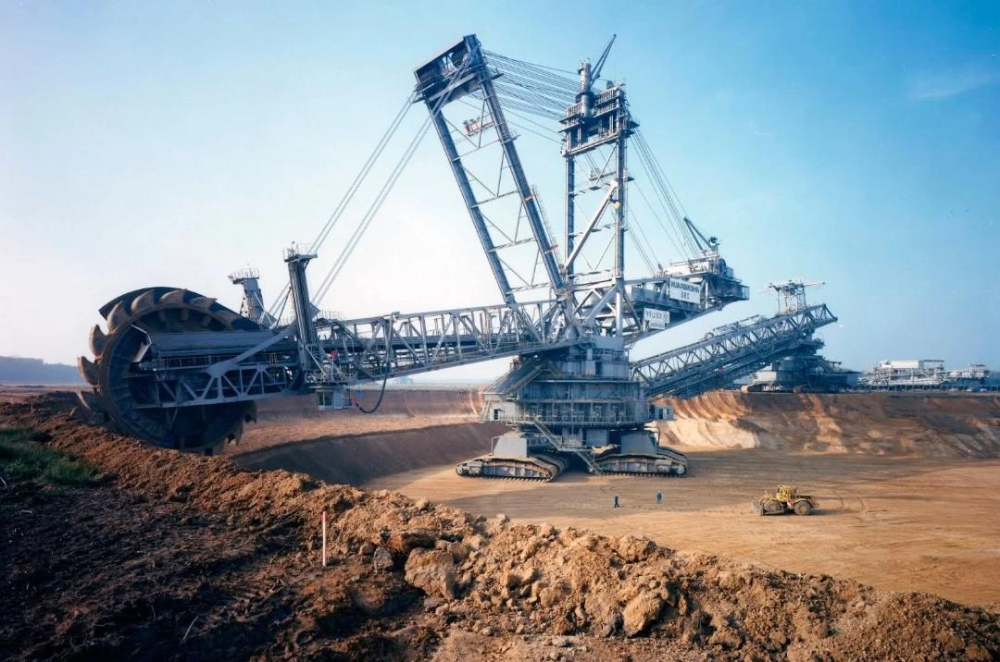

About:
Few machines command the sheer power and adaptability of the excavator, a cornerstone of modern construction, mining, and demolition. From the dusty plains of quarry sites to towering urban skylines, this mechanical titan transforms raw earth into engineered marvels. Designed to tackle a diverse range of tasks, the excavator excels not only at digging trenches but also at hoisting immense loads, dismantling structures, and even sculpting landscapes with finesse. But its capabilities don’t stop there—this powerhouse becomes a true multitasking marvel when paired with specialized attachments:
- Hydraulic Hammers: Smash through rock and concrete with forceful precision, turning obstacles into rubble.
- Grapples: Command control over debris and materials, making handling and demolition a streamlined operation.
- Augers: Spiral into the earth effortlessly to create perfect holes for foundations, poles, or landscaping projects.
- Rippers: Tame unyielding terrain, from frozen ground to compacted soil, with ease and efficiency.
- Tiltrotators: Add a new dimension of dexterity, enabling intricate movements and precision in tight or complex spaces.
Whether tearing through solid rock, shaping pristine landscapes, or constructing monumental edifices, the excavator stands as a testament to human ingenuity, merging brute strength with innovative versatility.
Key Features:
-
Boom and Arm:
The boom is the excavator's long, horizontal arm that serves as a vital bridge between the machine's main body and its working attachments. Engineered from high-strength steel, the boom delivers both reach and height, making it indispensable for tasks like digging deep trenches, lifting heavy loads, and precisely placing materials. Its robust construction is tailored to endure the relentless demands of heavy-duty operations, ensuring reliability and performance in challenging environments.
Attached to the end of the boom is the arm (also known as the dipper or stick), which extends further to connect to the bucket or other specialized attachments. The arm's design and adjustable length enhance the excavator's adaptability, enabling it to perform efficiently across diverse tasks and conditions—from deep excavation to high-reaching jobs.
The seamless motion and precision of both the boom and arm are powered by hydraulic cylinders, which deliver exceptional strength and control. These hydraulics ensure smooth, precise movements, allowing operators to handle even the most intricate tasks with confidence and accuracy.
 -
Bucket:
Excavator buckets come in a variety of shapes and sizes, each tailored to specific tasks, making them indispensable tools in construction and excavation projects. With the help of quick couplers, operators can swiftly switch between attachments, maximizing efficiency and adaptability on the job site. Here's a breakdown of the most common bucket types and their specialized uses:
- Standard Bucket: The all-purpose workhorse, ideal for general digging and material handling tasks.
- Heavy-Duty Bucket: Reinforced with extra wear plates and durable materials, this bucket is built to tackle demanding jobs like rock excavation and handling abrasive materials.
- Grading Bucket: A wide, flat bucket designed for precision tasks such as leveling soil, finishing landscapes, and smoothing surfaces.
- Trenching Bucket: Narrow and deep, this bucket excels at creating trenches for utility installations like pipes and cables.
- Rock Bucket: Built with toughened teeth and a robust structure, it's perfect for breaking through and handling rock or heavily compacted materials.
- Tilt Bucket: Engineered for versatility, this bucket can tilt at various angles, making it ideal for grading, contouring land, and working on sloped surfaces.
- Ditching Bucket: Designed with a wide, shallow profile, it is ideal for creating ditches, drainage channels, and other water management features.
Each bucket type plays a crucial role in ensuring excavators can handle a wide array of tasks with precision and efficiency, making them invaluable on any job site.
-
Operator Cab:
The rotating cab is a pivotal feature of excavators, offering 360-degree visibility that significantly enhances maneuverability and operational efficiency. Modern excavator cabs are thoughtfully engineered to ensure the operator's comfort, safety, and productivity. Key features include:
- Ergonomic Design: Adjustable seating, armrests, and controls minimize fatigue during long shifts, promoting operator comfort and efficiency.
- Enhanced Visibility: Expansive windows and well-placed mirrors provide excellent sightlines, improving safety and precision during operation.
- Climate Control: Integrated heating and air conditioning systems maintain a comfortable environment, regardless of external weather conditions.
- Intuitive Control Layout: Strategically positioned controls ensure easy access and smooth operation, reducing the learning curve and enhancing accuracy.
- Safety Features: Equipped with roll-over protective structures (ROPS) and falling object protective structures (FOPS) to safeguard the operator in hazardous conditions.
- Sound Insulation: Advanced noise-dampening materials create a quieter workspace, reducing distractions and operator fatigue.
These features collectively transform the excavator cab into a modern, operator-centric hub, blending safety, comfort, and efficiency for optimal performance in demanding environments.
-
Tracks or Wheels:
Excavators can be outfitted with tracks or wheels, each configuration tailored to specific environments and operational needs. The choice between tracks and wheels impacts the machine's stability, mobility, and overall performance:
Excavator Tracks:
Tracked excavators are ideal for rugged terrains and heavy-duty applications. Key benefits include:
- Stability: Tracks distribute the machine's weight over a larger surface area, providing exceptional stability, especially on uneven or soft ground.
- Traction: Designed to grip effectively on loose soil, mud, or rocky terrain, ensuring reliable performance in challenging environments.
- Durability: Constructed from high-strength materials to withstand harsh conditions and prolonged use.
Excavator Wheels:
Wheeled excavators are better suited for urban or paved environments, where mobility is crucial. Key features include:
- Mobility: Designed for quick movement between job sites, reducing downtime and increasing efficiency.
- Speed: Capable of traveling faster than their tracked counterparts, making them ideal for projects requiring frequent relocation.
- Reduced Surface Impact: Wheels minimize damage to paved surfaces, preserving roads and infrastructure.
Choosing between tracks and wheels depends on the job site's terrain, the nature of the tasks, and the need for speed versus stability. Both configurations ensure excavators can adapt to a wide range of operational demands.
Common Uses:
- Digging:
Excavators excel in trenching and foundation excavation, providing the depth and precision needed for robust structural bases.
- Demolition:
Equipped with powerful attachments, excavators efficiently dismantle buildings, bridges, and other structures with controlled force.
- Material Handling:
Facilitates the lifting, loading, and transport of heavy materials like concrete, soil, and debris across job sites.
- Landscaping:
Shapes terrain with precision, moves large volumes of soil, and prepares land for construction or aesthetic purposes.
- Road Construction:
Plays a key role in digging trenches for utilities, grading road surfaces, and preparing pathways for asphalt or concrete laying.
- Mining Operations:
Essential for removing overburden, extracting minerals, and loading raw materials onto transport vehicles in mining environments.
- Site Cleanup:
Swiftly clears debris and waste after construction or demolition, leaving the area ready for the next phase of work.
Types of Excavators
-
Crawler Excavators

Crawler excavators are equipped with tracks, offering excellent traction on rugged terrain. They are ideal for heavy-duty tasks like mining, construction, and digging on uneven surfaces, providing stability and durability for challenging projects.
-
Wheeled Excavators

Wheeled excavators are designed for mobility and speed, with wheels instead of tracks. They excel in urban environments, roadwork, and tasks that require frequent movement, offering versatility and minimal impact on paved surfaces.
-
Mini Excavators (Compact Excavators)

Mini excavators are compact machines perfect for small-scale jobs in tight spaces. They are commonly used in landscaping, residential projects, and confined areas, where their maneuverability and precision are invaluable.
-
Long Reach Excavators

With an extended arm and boom, long reach excavators are suited for specialized tasks like underwater excavation and demolition from a safe distance, offering superior reach and stability for such projects.
-
Dragline Excavators

Dragline excavators use a hoist rope and dragline bucket for large-scale material handling. These machines are essential in mining and heavy excavation, enabling efficient handling of large volumes of material over extended distances.
-
Suction Excavators (Vacuum Excavators)

Suction excavators use high-powered vacuum systems to remove soil or debris safely. Ideal for urban projects, they are commonly employed to avoid damage to underground utilities during non-destructive digging.
-
Hydraulic Shovel Excavators

These excavators are equipped with powerful hydraulic shovels, making them highly effective for mining and heavy-duty excavation tasks. They are designed to handle large volumes of material efficiently.
-
Amphibious Excavators

Amphibious excavators feature specialized pontoons or floating tracks, allowing them to work in water or swampy areas. They are ideal for dredging and waterway construction, excelling in unstable or wet environments.
-
Bucket-Wheel Excavators

Bucket-wheel excavators are massive machines used in large-scale mining and continuous excavation. Their rotating wheel with buckets enables efficient removal of large quantities of material in open-pit mining operations.
History:
-
Early Development
19th Century: The concept of mechanized digging began with the invention of the steam shovel in the 1830s. These machines were primarily used for large-scale earthmoving projects, such as canal and railroad construction.
-
The Birth of the Modern Excavator
Late 19th Century: The steam shovel evolved into a more versatile machine. In 1882, the first hydraulic excavator was developed in France by Édouard Thomas. This machine used hydraulic power for digging, significantly improving efficiency.
-
Mid-20th Century Innovations
1930s: The introduction of gasoline and diesel engines allowed for more powerful and reliable machines. This era saw the rise of cable-operated excavators, which were used extensively in construction and mining.
1940s-1950s: Post-World War II, the demand for heavy machinery surged as countries rebuilt infrastructure. Excavators became essential for construction projects, leading to innovations in design and functionality.
-
Hydraulic Revolution
1960s: The development of fully hydraulic excavators revolutionized the industry. These machines offered greater precision, flexibility, and control, allowing for a variety of attachments to perform different tasks, such as digging, grading, and demolition.
-
Technological Advancements
1980s-1990s: The introduction of computer controls and GPS technology improved the accuracy and efficiency of excavators. Automation features began to emerge, enhancing operator safety and productivity.
-
21st Century Developments
2000s-Present: Modern excavators are equipped with advanced technology, including telematics for remote monitoring, eco-friendly engines, and advanced safety features. Mini-excavators and compact models have also gained popularity for urban and smaller-scale projects.